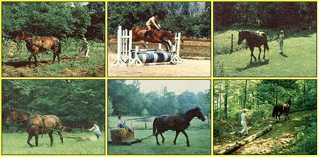

CLOCKWISE FROM ABOVE: Your own horse may have first been trained to be a riding-or even a show-animal, but the valiant steed can also be readily taught to lend a helping hand on your homestead by hauling . . . heavy stones . . . good-sized logs . . . and loads of hay .... The first step, though, is to make sure the new ""farmhand"" gets used to the feel of being in harness while you walk behind and give commands .... With some proper training-and a bit of patience-you may very well wind up with a cooperative four-legged garden tiller!